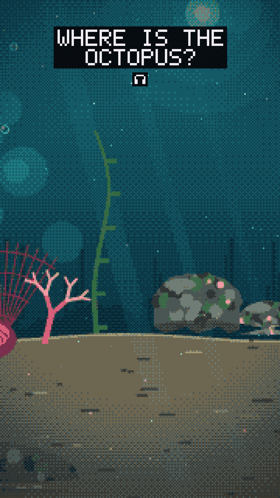
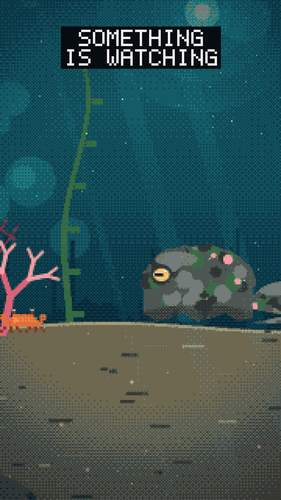
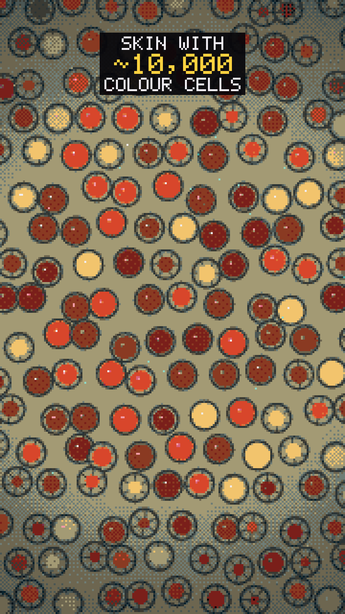
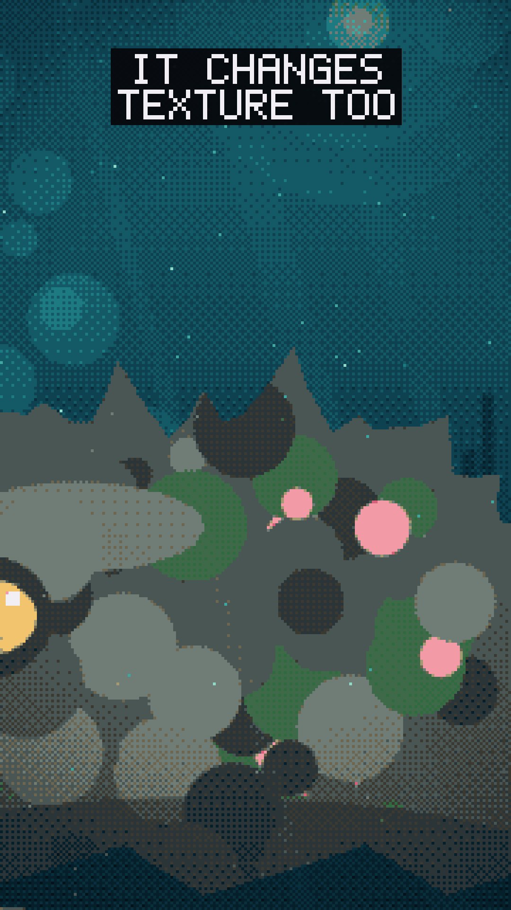
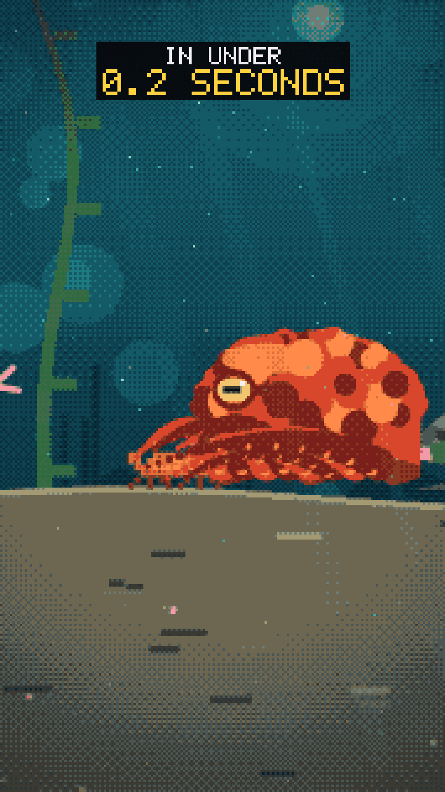
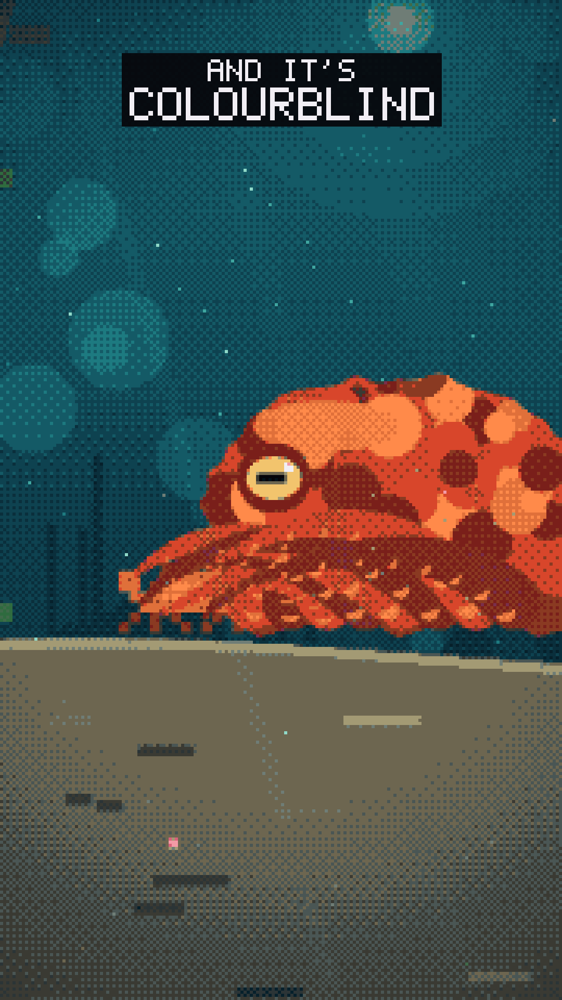
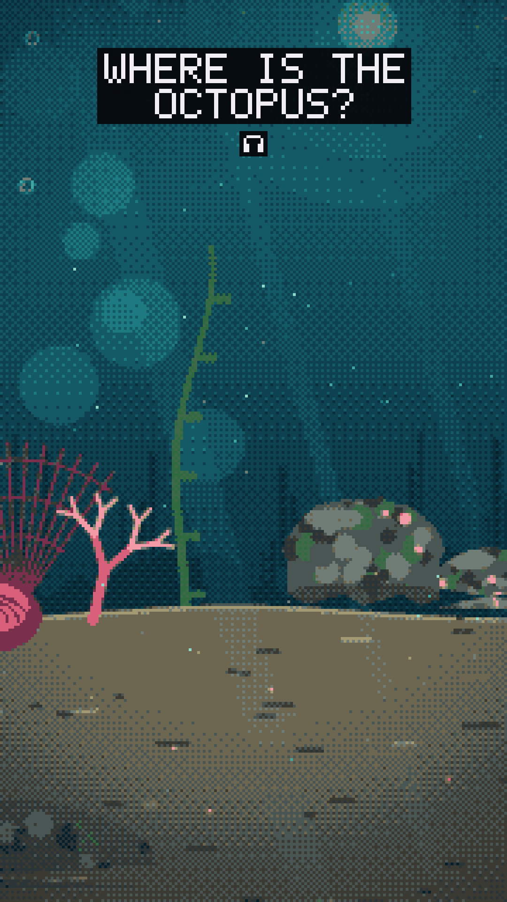

01: Where is it?
0.0 to 4.0s
Wide reef. The octopus is already there, posing as the mossy rock. Caption pops on with the 🎧 icon.

02: Something is watching
4.0 to 8.5s
A crab scuttles in from the left; the camera pushes in and the rock's eye opens.

03: Colour cells
8.5 to 13.5s
Macro dive into the skin: pigment sacs stretch open and shut in waves.

04: Texture
13.5 to 17.5s
Pull back to the skin's edge: bumps smooth out, then rise into spikes.

05: Strike
17.5 to 22.0s
Flash to orange-red, arms burst out, crab grabbed, with an impact shake.

06: Twist
22.0 to 26.5s
Push in on the eye as the red fades back to rock-grey in mottled patches.

07: Loop
26.5 to 30.0s
Pull back to the opening framing: the reef is empty again and the first caption returns.